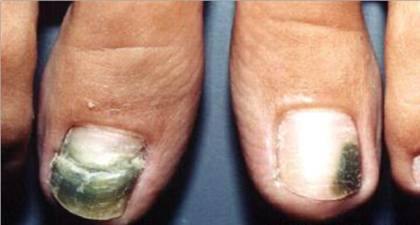

Tratamentos de Micoses a Laser
As micoses são infecções que acometem as unhas, causada por qualquer tipo de fungo. Pode ser adquirida de várias formas, tais como contato com o solo, animais e outras pessoas, além de alicates e tesouras que estejam contaminados. Os fungos mais frequentemente implicados pertencem a um grupo chamado de dermatófitos, os quais se alimentam de queratina, a "matéria-prima" das unhas. Qualquer unha pode ser acometida, porém as unhas do pé são mais frequentemente afetadas, devido principalmente ao uso constante de tênis e sapatos, propiciando um ambiente úmido, escuro e aquecido, que é favorável ao desenvolvimento dos fungos. Na maioria das vezes, apenas uma ou duas unhas estão doentes, sendo raro o acometimento de todas as unhas simultaneamente.
Sintomas
Normalmente, a primeira unha acometida é a do "dedão do pé". Inicia como uma mudança na cor da unha (amarelada, esbranquiçada ou amarronzada), na ponta, espalhando-se por toda a espessura da unha e depois em direção à cutícula. Com o passar do tempo, a ponta da unha se quebra ou é retirada pelo indivíduo, deixando a pele sob a unha exposta, local onde o fungo está realmente se multiplicando. O restante da unha pode deformar-se, permanecendo assim indefinidamente, se não tratada. As principais alterações observadas são as seguintes:
• Descolamento da ponta da unha: é a mais freqüente;
• Espessamento: as unhas tornam-se endurecidas e grossas, podendo ser dolorosas.
• Leuconíquia: manchas brancas na unha.
• Destruição e deformidade: a unha fica frágil e quebradiça, deformando-se.
• Paroníquia: nessa forma especial, o acometimento é na região do dedo ao redor da unha, que fica inflamada, avermelhada, inchada e dolorida.
Prevenção
Hábitos higiênicos são importantes para se evitar as micoses. Previna-se seguindo as dicas abaixo:
• Não ande descalço em pisos constantemente úmidos (lava pés, vestiários, saunas).
• Observe a pele e o pêlo de seus animais de estimação (cães e gatos). Qualquer alteração como descamação ou falhas no pêlo procure o veterinário.
• Evite mexer com a terra sem usar luvas.
• Use somente o seu material de manicure.
• Evite usar calçados fechados o máximo possível. Opte pelos mais largos e ventilados.
• Evite meias de tecido sintético, prefira as de algodão.
